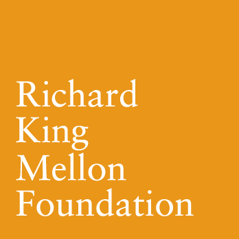
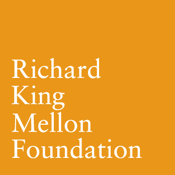

More than 60 years after the Supreme Court's ruling to desegregate schools, American K-12 education remains marred by strikingly inequitable access, opportunities, and learning outcomes across racial groups and income classes. These gaps are especially high in mathematics — a key gateway to high-paying careers in the 21st century — and they perpetuate inequalities across generations.
Our vision is to build a connective network between Pittsburgh-based universities, school districts, and community organizations that will develop and test an infrastructure of scalable social interaction techniques, software tools, and data-driven continuous improvement to personalize learning for the whole child.
This network will combine the expertise of the University of Pittsburgh's Center for Urban Education — a nationally recognized center of excellence for research and service in urban education — with the strengths of Carnegie Mellon University's LearnLab and affiliated initiatives in the domains of educational technology, AI, and learning science.
 
